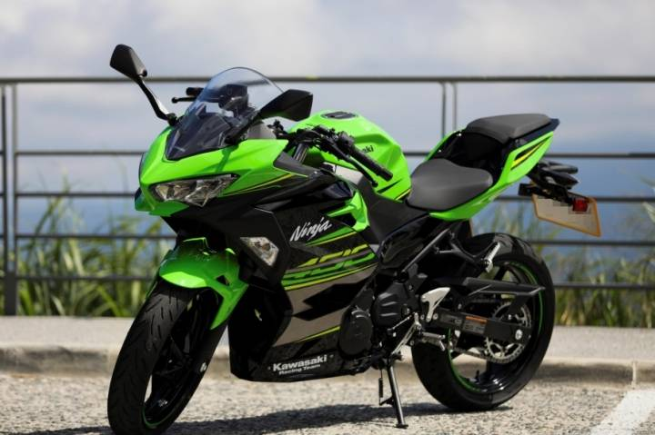

重機
全新NINJA 400從裡到外全面革新，於活動現場看見實車即可感受到NINJA 400較同級距對手更具肌肉感，在重量較上代車款減輕43公斤(ER-4F)的前提下，營造出逼近中量級仿賽車款的氣勢。
車頭造型依舊維持雙燈設計，但車燈角度稍有修改，並在下方加入如同新款YAMAHA MT-07般的車頭小擾流翼。
戰鬥程度更勝過往車款，手把依舊維持分離高把設定，介於仿賽車款與街車之間的騎姿能夠滿足輕鬆騎程帶點小熱血的騎乘體驗。

連到第2頁
連到第3頁
連到第4頁